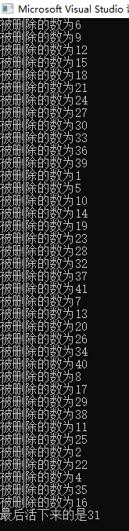

约瑟夫环问题是面试的时候很经典的一个算法
在罗马人占领乔塔帕特后，39 个犹太人与Josephu及他的朋友躲到一个洞中，39个犹太人决定宁愿死也不要被敌人抓到，于是决定了一个自杀方式，41个人排成一个圆圈，由第1个人开始报数，每报数到第3人该人就必须自杀，然后再由下一个重新报数，直到所有人都自杀身亡为止。然而Josephus 和他的朋友并不想遵从。这个过程沿着圆圈一直进行，直到最终只剩下一个人留下，这个人就可以继续活着。Josephus要他的朋友先假装遵从，他将朋友与自己安排在第16个与第31个位置，于是逃过了这场死亡游戏。
设有n个人围成一圈 , 编号从1到n , 约定从编号为k(1 <= k <= n)的人从1开始报数 , 数到 m 的那个人被淘汰 , 接着下一个人重新从1开始报数 , 数到 m 再淘汰一人 , 如此反复 , 直至剩下最后一个人为止
① 为什么使用单向循环链表 ?
我们可以知道约瑟夫问题是一个不断循环而且数据不断减少的过程 , 使用单向循环链表可以很方便地对数据进行删除 , 而且遍历链表非常方便
② 理清思路过程
Ⅰ. 首先一个带有n个结点的单循环链表 , 从第k个人开始从1报数
Ⅱ. 需要将头指针指向第k个人 , 辅助删除指针指向第(k-1)个人
Ⅲ. 定义辅助删除指针的意义是为了方便当第k个人淘汰时 , 可以很方便的将第(k-1)的next指针指向第(k+1)个人
Ⅳ. 当人数剩下一个人时 , 则认为这场游戏已经结束了 , 最后剩下的那个人就是胜利者
代码实现
#define _CRT_SECURE_NO_WARNINGS
#include <stdio.h>
#include <stdlib.h>
typedef struct Node {
int data;
struct Node *next;
}LinkList;
LinkList * CreatList(int n)//创建链表，结点个数为n
{
LinkList *p, *q, *head;
p = (LinkList *)malloc(sizeof(LinkList));
p->data = 1;
p->next = NULL;
head = p;
for (int i = 2; i <= n; i++)
{
q = (LinkList *)malloc(sizeof(LinkList));
q->data = i;
p->next = q;
p = q;
}
p->next = head;
return head;
}
int Find(LinkList *a,int k , int m)
{
for (int i = 1; i < k; i++)//从第K个人开始计数
{
a = a->next;
}
printf("第%d个人的值为%d\n", k, a->data);
LinkList *q = a;
while (a->next != a)
{
for (int j = 1; j < m; j++)
{
q = a;
a = a->next;
}
printf("被删除的数为%d\n", a->data);
q->next = a->next;
free(a);
a = q->next;
}
printf("最后活下来的是%d\n", a->data);
return 0;
}
int main()
{
int k = 1;
int m = 3;
int n = 41;
LinkList *a = CreatList(n);
Find(a,k,m);
return 0;
}

输出结果如图所示，最后活下来的两个数分别是16和31。学好数学 , 不断锻炼自己的逻辑 , 也许你不会遇到像约瑟夫的处境 , 但是这拥有强大的逻辑分析能力与数学基础必定对你有利!